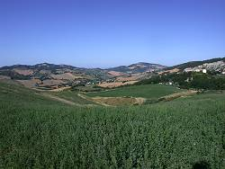
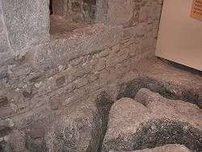
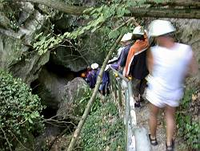

Grotta dell'Onferno
Grotte dell'Infierno
Useful Information
|  |
| Image: the karst complex of Onferno. Onferno with the castle is to the right, the upper cave entrance right below the castle. The town on the hilltop to the left is Gemmano. |
| Location: |
In Onferno, Gemmano.
30km from Rimini, 30km from Riccione, 20km from Cattolica. Leave Autostrada A14 Bologna-Bari at exit Cattolica. Drive towards TODO then towards TODO. After 12km turn left to Gemmano, 6km, and follow the road to Onferno, 7km. Alternative: follow the valley road to Mulina TODO then turn left. 4km to Onferno. |
| Open: |
JUN-SEP daily 9:30-12:30, 15-19. APR, MAY, OCT Sam, Sun 14:30-19. NOV-MAR Sun 14:30-19. [2001] |
| Fee: |
Cave tour and museum: Museum without cave tour: EUR 2. [2001] |
| Classification: |
 Karst cave,
gypsum cave. Karst cave,
gypsum cave.
|
| Light: | none, electric torches and helmets provided. |
| Dimension: | VR=70m, T=12-14°C. |
| Guided tours: | D=60min. |
| Photography: | |
| Accessibility: | |
| Bibliography: | |
| Address: |
Grotte di Onferno e Museo Naturalistico, via Provinciale Onferno, 47855 Gemmano (RN), Tel: +39-0541-984694, Fax +39-0541-984694.
E-mail: |
| As far as we know this information was accurate when it was published (see years in brackets), but may have changed since then. Please check rates and details directly with the companies in question if you need more recent info. |
|
History
Description
 |
| Image: a close look on the local anhydrite. |
The name of the place, Onferno, may have been choosen because of the fog which sometimes comes out of the cave. So people thought they were the entrance to hell.
|  |
| Image: the gypsum karren are the basement of the entrance building. They were re-excavated when it was turned into a museum and are now one highlight of this museum. |
The cave is an exptraordinary interesting river cave and is, as far as I know, the only show cave in gypsum in Italy. The whole area of Onferno is an outcrop of anhydrite, which is very easily soluble by water. The solution leads to an extreme relief, rocks and cliffs, and steep, unfertile and dry slopes. This unfriendly areas give home to numerous rare specialists, plants and animals, and are thus protected. The whole area, including the cave with its bats is a nature reserve. The information center for the reserve is located in the castle.
|  |
| Image: firsta walk through "rain forest" to the lower entrance of the cave. |
The cave entrance is a nice builing with a tower, built of rocks. It was obviously once a part of the castle, maybe storage room, barn or stable. Now it is completely renovated and serves as a speleologic museum. The ground floor is dedicated to gypsum karst, speleology and geology of the area. The upper floor is an exhibition about bats, showing their live, breeding and death, their sonar system and the anatomy of their wings. The whole exhibition is completed by two multimedia systems with huge trackballs for children to explore. A very nice exhibition, but unfortunately only in Italian.
The visitors are equipped with helmets and electric torches, and the tour starts. The helmets are not really necessary, as there are only two or three a little low places. Most of the cave is pretty high and narrow. The electric torches are absolutely necessary. The cave has no light at all, and people who feel uncomphortable with this should relinquish this tour. But other things are not so obvious and should be noted: the floor is often a little wet, dirty and slippery. Good shoes are essential. And the cave is rather cool, so shorts and a tee are not enough. The path goes uphill all the time, and you get warm by the walking. But a sweater and long trousers are recommended.
 |
| Image: the entrance is the part with the lowest ceiling. But one duck and you are through. |
 |
| Image: a typical passage with the narrow path. |
Now we leave the entrance through the back door and follow the path through a rain forest, a damp and warm forest which even houses lianas. The guide tells, the young lianas can be eaten. After some more stops and explanations we reach the lower end of the cave. The is the exit of the cave river and secluded between rocks and trees. This point is the coldest point of the tour with about 8°C. It seems the cave gets warmer from the lower to the higher entrance. Soon after the cave entrance the temperature is 12°C and this still rises to 14°C at the upper end.
Now we enter the cave. The low ceiling is aboout the lowest point of the cave, there are two more, but they are about the same or higher. We now follow the mostly dry bed of the cave river, always on a small path about 30cm higher than the river bed. Sometimes is still wet and slippery with mud. Only in the last part the river vanishes and we ascend on a dry path on cave debris.
 |
| Image: extraordinary are calcite speleothems in a gypsum cave. This requires an overlaying layer of limestone which is soluted by the water before it enters the cave. |
A very interesting part, for some visitors funny and for some cruel, is extremely narrow. The whole cave is only 40cm wide and snakes uphill. And this part lasts for several meters. Many children like this part most.
The last part is the area where the pipistrelle, the bats, live. The cave houses mothers and childs, no male adults. So it is called a nursery, and visitors are asked to turn off there lights. Many cave spiders on the floor wait for prey, like insects thrown away by the bats, or even dead bat children falling on the ground.
Soon after we leave this area the typical smell of the bat guano end. A last dry part of the cave goes up steep to the upper entrance. Impressive cliffs are right above this entrance. And the castle sitts right on top of it. A small chamber beneath the cave entrance was used for a mill, obviously driven by a donkey. Rooms to store the grain were partly cut into the soft anhydrite and then closed by walls.
After a few steps we see the valley above the cave. This is a small and steep valley which has no subaerial drainage. All the water collecten in winter and spring, runs down the cave. There are swallow holes right beneath the cave entrance. And this water is the reason why this cave may only be visited in summer.
A last word, as this cave is rather rough: You do not need any experience or climbing ability. I fit through the narrow passages without any problems, although I am rather heavy. But the cave is not recommended for people with claustrophobia or fears of darknes, and the visitors should be able to walk the rather strenuous tour, so it is not recomended for people with heart problems. But it is normally big fun for young families with children of any age.
 Search Google for "Grotta dell'Onferno"
Search Google for "Grotta dell'Onferno" Google Earth Placemark
Google Earth Placemark ONFERNO - RISERVA NATURALE ORIENTATA
(visited: 17-OCT-2010),
official website.
(
ONFERNO - RISERVA NATURALE ORIENTATA
(visited: 17-OCT-2010),
official website.
( )
){kind=link}
{kind=link}
{kind=link}